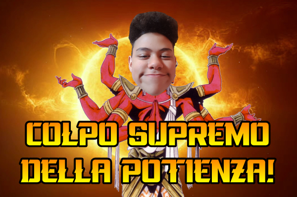

CHE COS’è LA POTIENZA?
La Potienza è una forza che risiede in ogni essere esistente nell’universo ma non tutti l’hanno risvegliata… Uno dei primi esseri ad essere creato DAL SOMMO è l’Australopiteco! L’Australopiteco è un essere ricolmo di Potienza (NON COME IL SOMMO OVVIAMENTE) ma la usa per spacciare biscotti DEL SOMMO a chi crede in lui.
EFFETTI DELLA POTIENZA
 La Potienza è raffigurata nei ritratti DEL SOMMO come una luce accecante che procura gioia,conoscenza e forza. Chi non ha ancora risvegliato la Potienza è un essere inferiore a tutti gli altri (ovviamente per inferiore s'intende che è stupido come un sasso) Chi rinnega la Potienza come detto in precedenza verrà fulminato ma non da un fulmine bensì dal COLPO SUPREMO DELLA POTIENZA! Ovviamente questo solo in casi estremi, di solito chi solo pensa di rinnegare la Potienza viene rapito dall'Australopiteco e viene rinchiuso nella cantina speciale dell'Australopiteco.